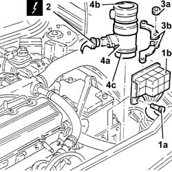
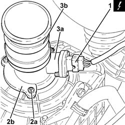
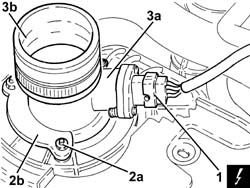

1060G10 flow meter - r r
- Path
- Procedures > 10 ENGINE > 1060 DIESEL FUEL INJECTION > 1060G pressure pump electric control > 1060G10 flow meter - r r
- Kind
- repair procedure (removal / refitting; the operation number is the code)
- Applies to
- engines: 1.9 JTD 8v , 1.9 JTD 16v, 2.4 JTD 10v, 2.4 JTD 20v; all production periods
- Interactive page
- https://sloeber94.github.io/elrnDB-a156/en/#/3237808
Applies to: engines: 1.9 JTD 8v , 2.4 JTD 10v; all production periods
 Removing
Removing
 Refitting
Refitting1048A50 air inlet pipe to turbo charger - r + r
Make sure that the ignition is off (STOP position), then disconnect the negative battery terminal (refer to op. 5530B10 battery - r+r ).
 | Name | Connector |
|---|---|---|
- | Battery |
1. Undo the bolts (1a) and move the relay holder backet (1b) away from the battery drip tray.
2. Disconnect the flow meter electrical connection.
| Name | Connector |
|---|---|---|
2 | Air flow meter |
3. Undo the nuts (3a) and remove retaining plates (3b).
4. Remove flow meter (4a) together with the sleeve from the flow meter to turbocharger air intake pipe (4b) and the sleeve from the filter to flow meter (4c).

Applies to: engines: 1.9 JTD 8v , 2.4 JTD 10v; all production periods
Refitting
RemovingFit the flow meter and sleeves, then secure using the nuts and plates.
Connect the electrical connection to the flow meter.
Place the relay holder bracket back in its housing and fix it using the bolts.
Connect the negative (-) battery terminal.
Applies to: engines: 1.9 JTD 16v; all production periods
Removing
RefittingProceed with removal 1016A10 sound-proofing cover - r + r .
Proceed with removal 1048A50 air inlet pipe to turbo charger - r + r .
Proceed with removal 5530B10 battery - r+r .
Proceed with removal 5530B52 Battery DRIP TRAY/SUPPORT - R.R. .
1. Disconnect the electrical connection from the air flow meter.
| Name | Connector |
|---|---|---|
1 | Air flow meter |
2. Undo the nuts (2a) and remove the mounting plates (2b).
3. Remove the air flow meter (3a), complete with hose (3b).

Applies to: engines: 1.9 JTD 16v; all production periods
Refitting
RemovingRefit the air flow meter in its seating complete with sleeve and secure it with the plates and nuts.
Connect the electrical connection to the air flow meter.
Proceed with refitting 5530B52 Battery DRIP TRAY/SUPPORT - R.R. .
Proceed with refitting 5530B10 battery - r+r .
Proceed with refitting 1048A50 air inlet pipe to turbo charger - r + r .
Proceed with refitting 1016A10 sound-proofing cover - r + r .
Applies to: engines: 2.4 JTD 20v; all production periods
Removing
RefittingProceed with removal 1016A10 sound-proofing cover - r + r .
Proceed with removal 5530B10 battery - r+r .
Proceed with removal 1048A50 air inlet pipe to turbo charger - r + r .
1. Disconnect the electrical connection from the air flow meter.
| Name | Connector |
|---|---|---|
1 | Air flow meter |
2. Undo the nuts (2a) and remove the mounting plates (2b).
3. Remove the air flow meter (3a), complete with hose (3b).

Applies to: engines: 2.4 JTD 20v; all production periods
Refitting
RemovingRefit the air flow meter in its seating complete with sleeve and secure it with the plates and nuts.
Connect the electrical connection to the air flow meter.
Proceed with refitting 1048A50 air inlet pipe to turbo charger - r + r .
Proceed with refitting 5530B10 battery - r+r .
Proceed with refitting 1016A10 sound-proofing cover - r + r .
Topics linked from this page (6)
- 1016A10 sound-proofing cover - r + r
- 1048A50 air inlet pipe to turbo charger - r + r
- 5530B10 battery - r+r
- 5530B52 Battery DRIP TRAY/SUPPORT - R.R.
- A1B Battery ( BATTERY NEGATIVE )
- K41 Air flow meter ( ENGINE )